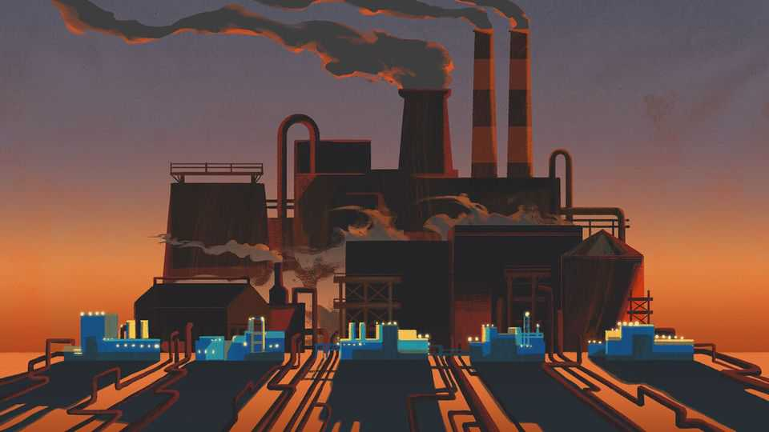

China won’t apologise for overcapacity
Its industrial policy rests on a simple principle: might makes right

Aug 6th 2026
“SO CALLED” is a favourite epithet in the rhetorical armoury of Chinese officials facing unwelcome foreign criticism. The officials dismiss talk of China’s “so-called human-rights problems”, lob insults at America’s “so-called freedom of speech” and brush aside “so-called experts”. Over the past week they meted out the same treatment to “so-called overcapacity” in the Chinese economy. In a lengthy new paper, the commerce ministry seeks to rebut the accusations of industrial excess levelled against China by many foreign governments and economists.
The paper is both rigorous and disingenuous. Some parts bring healthy scrutiny to the concept of overcapacity. The deep insincerity of other sections suggests contempt for countries facing waves of Chinese exports. Yet even meretricious arguments warrant attention when they are bound to start recurring as talking points in official speeches, state media and diplomatic meetings.
Start with the most intellectually honest contributions of the paper. Over time, it rightly notes, the topography of global production remains in constant flux. America dominated global manufacturing after the second world war, before passing the baton to others; China is the world’s factory for now, though presumably not for eternity. The commerce ministry is also right to point out that definitions of overcapacity are slippery. More than a fifth of factory capacity is idle across Europe and America, but few talk about excess capacity there. Export strength does not, by itself, equate to overcapacity. Otherwise, why not point a finger at Boeing, which sells two-thirds of its planes abroad?
The ministry rightly highlights Chinese dynamism. Innovation, manufacturing clusters and intense domestic competition have led Chinese producers to cut costs and boost quality. Companies that emerge from the crucible of the local market are better placed to take on the world. And there are benefits to others: the global cost of electricity from solar and wind energy has fallen by more than half in recent years, thanks largely to Chinese manufacturing and technology.
That is only part of the story, though. Elsewhere, the paper elides or drifts into denialism. Certainly, Chinese companies are low-cost producers, but that is no random market outcome, for the government has helped bring it about. Officials are rarely so crude as to state openly they want to cut imports. Yet that is what comes from pursuing self-reliance in science and technology, a state objective loved by Xi Jinping. Moreover, a giant like China building up the production capacity to replace foreign imports also builds up the production capacity to lord it over global markets. For instance, in achieving its goal of sourcing domestically 80% of the parts that go into advanced ships, China has become the world’s biggest shipbuilder.
The ministry’s discussion of state subsidies makes an art of dissimulation. It limits analysis only to direct subsidies—merely the most superficial of the techniques that China uses to favour its own companies. Other crucial forms of support include public investment in chipmakers, cheap land and rules compelling state firms to buy domestically. In the background are the policy settings—above all, a weak social safety-net—that have engendered a perpetually high savings rate. The government often boasts about its annual import exhibitions, but so long as China’s savings far outstrip its investment, its exports will, by economic definition, exceed imports. The outcome: the forging of an industrial machine that relies on global markets as its chief outlet. It is a permanent state of industrial production well in excess of China’s domestic needs across virtually all sectors—in short, overcapacity.
The paper has tin-eared triumphalism aplenty. The China shock contributing to Germany losing 10,000 manufacturing jobs a month? The ministry wants you to see that as a “China opportunity”. Countries cutting dependence on China? They will only hurt the world—never mind that China has long sought to cut dependence on others. Trade restrictions imposed by Europe and America on China? They undermine mutual trust; ignore that China wields trade sanctions as a geopolitical weapon.
The academic debate about Chinese overcapacity speaks to a broader and more fundamental struggle under way: a material contest over the worldwide shape of industrial production. On one side is China, supremely proficient in all manner of production. In that sense the commerce ministry is correct that China is competitive. But foreign companies are competing against not just supple, hard-driving Chinese firms but a whole-of-state approach to industry. Foreign companies, however big, stand little chance against a Leninist developmental state that has attained China’s size, wealth and modernity. As Rhodium Group, an American research firm, points out, the Chinese state once limited its intervention to a handful of sectors that it deemed to be strategic; now it pursues an “industrial policy of everything”.
On the other side is everyone else. Whether other countries are willing or able to defend what remains of their industrial turf is an open question. For at least a decade, America has been groping for a response. It has imposed tariffs on Chinese goods and worked to reshore production; despite President Donald Trump’s scorn for allies and admiration for China and Mr Xi, his administration wants to work with other countries, for instance, in securing critical supply chains. Europe is inching its way towards (embryonic) made-in-Europe plans. But both America and Europe have already run smack into Chinese dominance, above all, its rare-earth stranglehold. This is the part left unsaid in China’s rebuttal of all the overcapacity talk: try as they might, other countries struggle to fight back. Industrial might makes right. ■